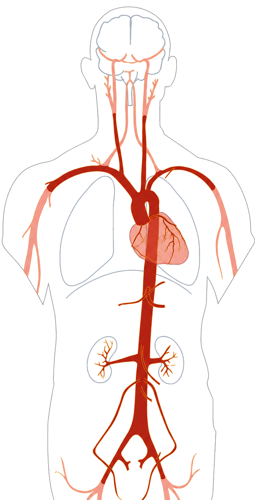

Alex
Aortic Aneurysm
Alex is young, feels well, and already knows that Marfan syndrome can make his aorta vulnerable. His scan turns that risk into something visible: a vessel that needs to be watched before it becomes dangerous.
Start Alex's storyby Luisa Flaig & Aaron Schroeder
This application is a science-communication project about the aorta and the diseases that can change it. It translates medical imaging, computational models, and clinical knowledge into an interactive scrollytelling experience that can be explored at a human pace.
The underlying vascular models and datasets come from the Vascular Model Repository, an open-source database of computational models of normal and diseased cardiovascular anatomy. The repository is intended for research; this project creates a visual and narrative entry point for understanding what those models can show.
At the centre of the body, one vessel carries the force of every heartbeat. Before following disease, we first look at the healthy aorta: its route from the heart, its major branches, and the places where its shape matters. This shared map makes the later changes easier to recognize and understand. The aorta is continuous, but it passes through the chest and abdomen and supplies different parts of the body along the way. Use the markers to meet its main regions before entering either story.

Both stories begin with the same vessel, but the circumstances are different: one follows a slow enlargement, while the other begins with a sudden tear.
Aortic Aneurysm
Alex is young, feels well, and already knows that Marfan syndrome can make his aorta vulnerable. His scan turns that risk into something visible: a vessel that needs to be watched before it becomes dangerous.
Start Alex's story
Aortic Dissection
Miriam's story begins abruptly, with pain that points to an emergency inside the vessel wall. From the first scan onward, the question becomes how the torn aorta changes over time.
Start Miriam's story